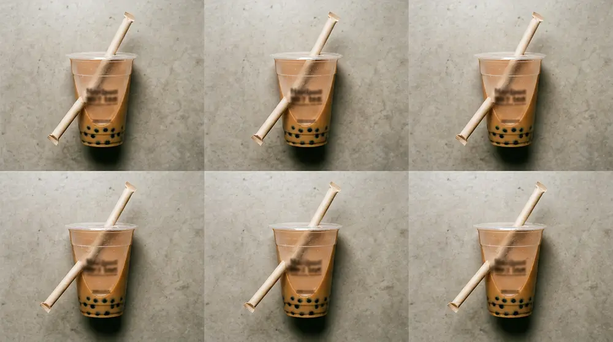
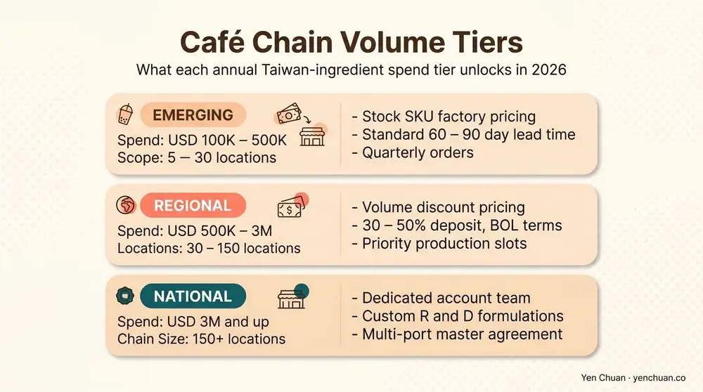
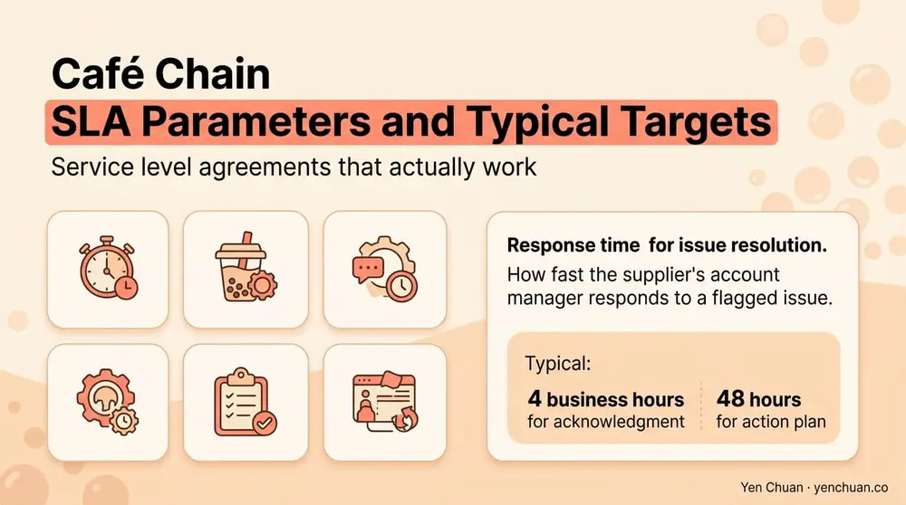

Articles / Business & sourcing
Boba Tea Wholesale for Café Chains: Tiers & SLAs
2026-02-28 · Sourcing, Business

Original public content from Yen Chuan. Product claims and specifications remain subject to confirmation by the company.
Café chains buy differently from independent boba shops, and suppliers who treat them the same lose the business within two years. A 30-location regional chain or a 300-location international brand needs volume pricing that flexes with growth, SKU consistency that holds across markets, and service level agreements that translate "we delivered" into measurable performance. This guide unpacks how Taiwan bubble tea wholesale works specifically for café chains — the three pricing tiers that actually show up in quotes, the customization lanes that are worth paying for, and the SLA language that protects operations when lead times slip.
Why café chains need a different supply structure
An independent boba shop and a café chain both order tapioca pearls and non-dairy creamer, but the buying psychology is opposite. An independent is price-sensitive, flexibility-hungry, and usually willing to accept reasonable inconsistency to get a better deal. A chain trades price sensitivity for predictability — menu standardization, audit trails, and the ability to open a new location without relaunching a supply chain every time.
That difference shows up in three concrete ways. First, chains order on a rolling forecast, not a spot basis — lead-time certainty is worth more than a 5 percent price cut. Second, chains need SKU stability — a reformulation of brown sugar syrup is not a small matter when 80 stores are pouring it into a signature drink. Third, chains scale through multi-site logistics, which means suppliers have to coordinate with 3PLs, regional warehouses, and sometimes multiple customs entries. Our Milk Tea Supplier Guide covers the general vetting framework, but chains layer additional requirements on top.
The three volume tiers that actually matter
Taiwan suppliers structure café-chain wholesale pricing around three meaningful volume bands. Below are the typical 2026 thresholds and what each tier unlocks.
| Tier | Annual Taiwan-ingredient spend | What it unlocks |
|---|---|---|
| Emerging chain | USD 100K-500K (5-30 locations) | Stock SKU factory pricing, standard 60-90 day lead times, quarterly orders |
| Regional chain | USD 500K-3M (30-150 locations) | Volume discount, 30-50% deposit + BOL terms, priority production slots, annual commercial schedules |
| National/international chain | USD 3M+ (150+ locations) | Dedicated account team, custom formulations at favorable MOQs, multi-port shipping, contract pricing with index clauses, co-located warehousing options |
The jumps between tiers are not linear. Moving from emerging to regional usually unlocks 8-12 percent in unit-price savings alone, plus softer wins like priority production. Moving from regional to national unlocks custom R&D access and the ability to ship to multiple ports under one master agreement — which matters enormously if you operate across regions with different regulatory regimes. For chains modeling early-stage costs alongside this tier math, the bubble tea startup costs breakdown shows how per-location ingredient cost changes with scale.

Customization — which lanes are worth paying for
Every chain wants to differentiate on menu. Not all customization delivers ROI. Three lanes consistently earn their cost, and two usually do not.
Worth paying for:
- Signature flavor development. A custom brown sugar syrup, a proprietary milk tea base, or a regional fruit blend that competitors cannot replicate. Done right, this becomes the hook for a menu page and the reason customers pick your brand over the next boba shop on the block. Pair this with our menu design and R&D solution page for how this typically flows through a supplier.
- Private-label packaging and artwork. Your cups, lids, and sleeves carrying your brand, not a generic print. For a 30+ location chain this is table stakes for brand recognition.
- Regionally adjusted formulations. Sweetness levels, sugar alternatives, and non-dairy base adjustments tuned for each market (e.g., a lower-sugar variant for Japan, a halal-certified creamer for Southeast Asia, an RSPO-certified version for EU retail). For chains operating across certifications, see our RSPO vs non-RSPO creamer breakdown.
Usually not worth it:
- Custom pack sizes for stock SKUs. Repackaging a standard flavor into your own pouch size rarely beats the cost of using factory-standard packs. Unless you have a specific operational reason (e.g., portion control for a fast-casual format), stock packaging is fine.
- Proprietary tapioca pearls. Tapioca pearls are a category where stock production is exceptional and margin on "custom" pearls is usually just marketing. The black vs white tapioca pearls guide and our tapioca pearls wholesale range show where stock quality already meets premium chain needs.
The practical framework: customize where the customer tastes it (flavors, packaging) and stock where they do not (standard tapioca, standard tea leaves, generic packaging tiers).
Service level agreements that actually work
An SLA that says "supplier will use commercial best efforts to deliver on time" is not an SLA. A real SLA is numerical, measurable, and comes with a remedy when missed. For café-chain supply contracts, the six SLA parameters below cover the operational surface area.
1. Order confirmation time. Supplier confirms PO details within X business hours (usually 24-48). Missed confirmation triggers escalation to account manager.
2. Production lead time. Number of working days from PO confirmation to ready-for-shipment. Typical ranges: 21-30 days for stock SKUs, 35-60 for custom. Late production triggers partial credit or airfreight differential.
3. On-time shipment rate. Percentage of POs shipped within the agreed window over a rolling 12-month period. A healthy target is 95 percent or higher. Below 90 percent, trigger a supplier review.
4. Order fill rate. Percentage of ordered units actually shipped per PO. Target 98 percent or higher. Short-ships beyond that should be either credited or backfilled at supplier's cost.
5. Quality acceptance rate. Percentage of lots that pass buyer's QC or third-party inspection on first receipt. Target 99 percent. Failed lots replaced at supplier's cost including freight.
6. Response time for issue resolution. How fast the supplier's account manager responds to a flagged issue. Typical: 4 business hours for acknowledgment, 48 hours for action plan.

The SLA lives in a schedule attached to the master supply agreement (see our 12-clause contract checklist approach for the broader agreement structure). It should be reviewed quarterly against actual performance, with persistent underperformance triggering either a corrective action plan or an escape to an alternate supplier.
Multi-site logistics — the detail chains forget
For a single-location shop, logistics is one port, one warehouse, one delivery route. For a regional or international chain, it is a distribution problem with multiple variables. Three considerations move the operational math.
Port selection. If your locations cluster in two regions (e.g., US West Coast and US East Coast), shipping to two ports rather than one saves 40-60 percent on domestic trucking even though ocean freight is roughly equivalent. A supplier's ability to ship to multiple named ports under one master PO is a real differentiator at the national-chain tier.
Regional warehouse staging. At USD 3M+ annual spend, some suppliers will hold a regional safety stock — typically 30-45 days of demand at a 3PL in your main market. This shortens your effective lead time from 45-75 days (Taiwan origin to store) to 7-14 days (warehouse to store), which transforms your inventory planning.
SKU rationalization across locations. Chains that allow wide menu variation across locations (e.g., regional flavor exclusives) end up with SKU proliferation that kills volume pricing. The discipline: 70-80 percent of SKUs shared across all locations, 20-30 percent regional. This preserves tier-level volume while allowing meaningful localization.
The contract structure most chains use
For café chains operating at regional tier and above, the working structure is a master supply agreement with an attached annual commercial schedule and an SLA schedule. The MSA handles legal terms (arbitration, IP, force majeure, termination). The commercial schedule handles pricing, MOQs, and lead times for the current year. The SLA schedule handles performance metrics and remedies. This separation lets commercial terms flex annually without reopening legal work, and lets SLAs tighten as the relationship matures.
Authority citations
- Euromonitor International — Specialty Coffee and Tea Chain Report, 2026
- Mordor Intelligence — Asia-Pacific Café Chain Market Outlook 2026
- McKinsey & Company — Foodservice Procurement Benchmarks, 2025
- Statista — Bubble Tea Market 2026
- Food & Beverage Magazine — Chain Supplier SLA Standards, 2026
About Yen Chuan
Yen Chuan has been at the heart of Taiwan's bubble tea industry for over 20 years, supplying premium powders, syrups, tapioca pearls, and tea leaves to thousands of boba shops worldwide. With an in-house R&D lab and a commitment to quality ingredients, Yen Chuan is more than a supplier — we're your partner in the boba business.
We supply regional chains across Asia-Pacific, North America, and Europe under multi-year master agreements with tiered pricing, priority production slots, and measurable SLAs. The structures in this guide reflect what actually works in those programs today.
Ready to scale supply with your chain?
If you are running a multi-location boba or café chain and looking for a supplier who can hold pricing, lead times, and quality across your full footprint, our export team is set up to work at chain scale. Contact us with your location count, annual volume, and SKU list, and we will model a tier structure and draft an SLA that fits your operation.
Frequently Asked Questions
Q: What volume qualifies a café chain for tier pricing from Taiwan suppliers? A: Three tiers apply in 2026: emerging chain (USD 100K-500K annual, 5-30 locations) unlocks factory pricing on stock SKUs; regional chain (USD 500K-3M, 30-150 locations) unlocks volume discounts and priority slots; national or international chain (USD 3M+, 150+ locations) unlocks dedicated account teams, custom R&D, and multi-port shipping.
Q: Which boba menu customizations are worth paying for? A: Signature flavor development, private-label packaging, and regionally adjusted formulations (halal, lower-sugar, RSPO-certified) deliver clear ROI. Custom pack sizes for stock SKUs and "proprietary" tapioca pearls usually do not — stock equivalents perform just as well.
Q: What SLA parameters should a café chain require from a boba supplier? A: Six measurable parameters: order confirmation time (24-48 hours), production lead time (21-30 days stock, 35-60 custom), on-time shipment rate (95%+), order fill rate (98%+), quality acceptance rate (99%+), and issue-resolution response time (4 hours acknowledgment, 48 hours action plan).
Q: Should a growing chain use one port or multiple? A: Multiple ports typically save 40-60 percent on domestic trucking once locations cluster in two or more regions. A supplier's ability to ship to multiple named ports under one master PO is a meaningful differentiator at the national-chain tier.
Q: How do I prevent SKU proliferation from killing volume pricing? A: Target 70-80 percent of SKUs shared across all locations, with only 20-30 percent reserved for regional exclusives. This preserves tier-level volume for the core menu while still allowing meaningful localization where it matters for customers.